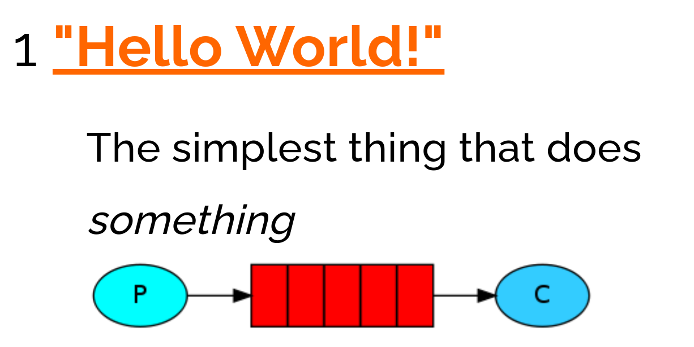
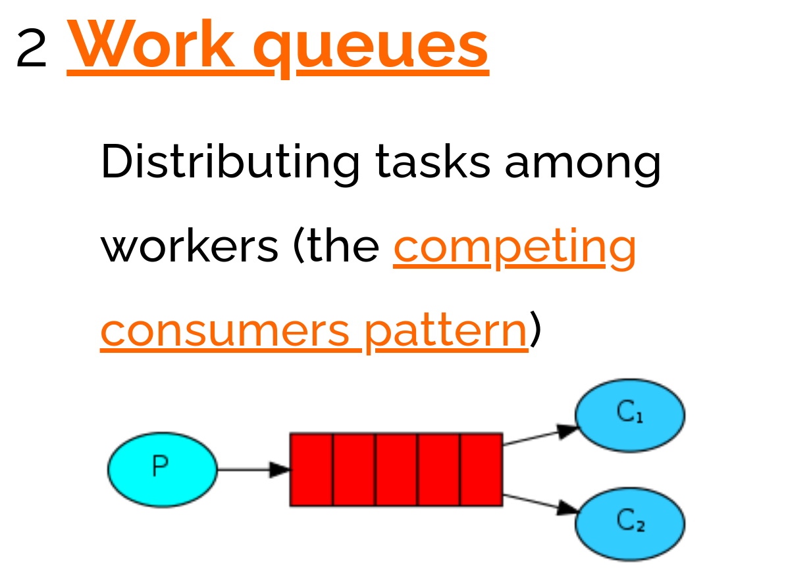
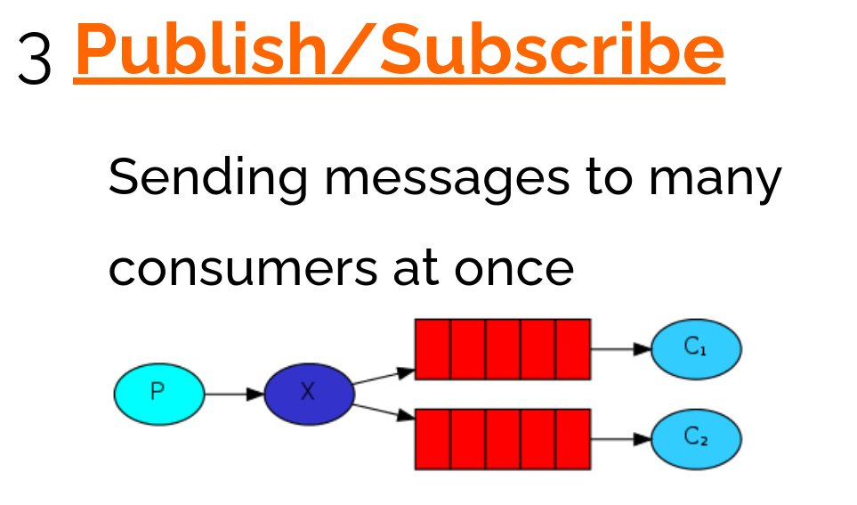
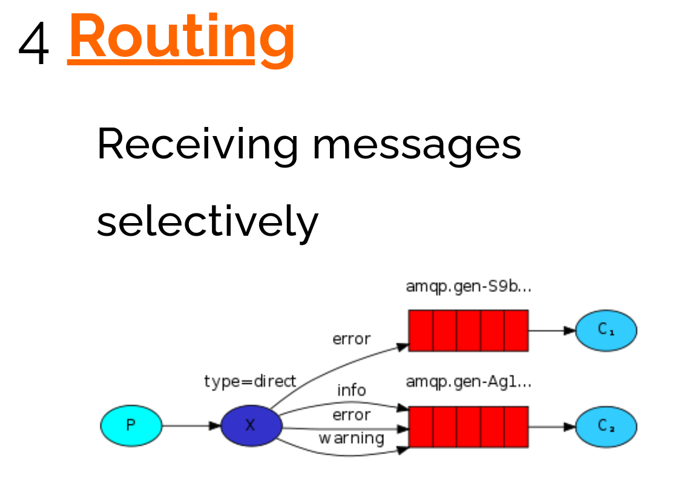
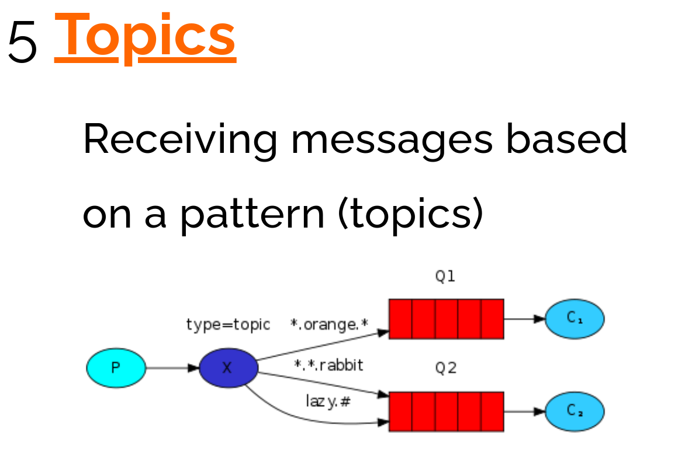
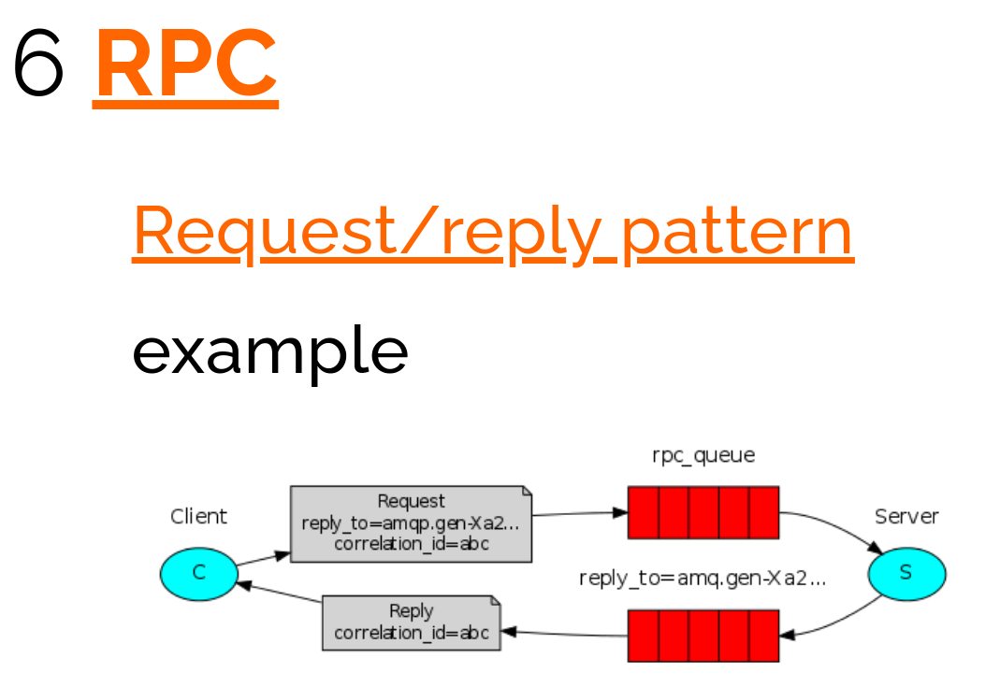

MQ全称 Message Queue（消息队列），是在消息的传输过程中保存消息的容器。多用于分布式系统之间进行通信。
MQ的优势
应用解耦
提高系统容错性和可维护性
异步提速
提升用户体验和系统吞吐量
削峰填谷
提高系统稳定性
MQ的劣势
系统可用性降低
系统引入的外部依赖越多，系统稳定性越差。一旦 MQ 宕机，就会对业务造成影响。
系统复杂度提高
MQ 的加入大大增加了系统的复杂度，以前系统间是同步的远程调用，现在是通过 MQ 进行异步调用。
常见产品
| Rabbit MQ | Active MQ（相对使用不多） | Rocket MQ | Kafka | |
|---|---|---|---|---|
| 公司/社区 | Rabbit | Apache | 阿里 | Apache |
| 开发语言 | Erlang | Java | Java | Scala&Java |
| 协议支持 | AMQP，XMPP，SMTP，STOMP | OpenWire,STOMP，REST,XMPP,AMQP | 自定义 | 自定义协议，社区封装了http协议支持 |
| 客户端支持语言 | 官方支持Erlang，Java，Ruby等,社区产出多种API，几乎支持所有语言 | Java，C，C++，Python，PHP，Perl，.net等 | Java，C++（不成熟） | 官方支持Java,社区产出多种API，如PHP，Python等 |
| 单机吞吐量 | 万级（其次） | 万级（最差） | 十万级（最好） | 十万级（次之） |
| 消息延迟 | 微妙级 | 毫秒级 | 毫秒级 | 毫秒以内 |
| 功能特性 | 并发能力强，性能极其好，延时低，社区活跃，管理界面丰富 | 老牌产品，成熟度高，文档较多 | MQ功能比较完备，扩展性佳 | 只支持主要的MQ功能，毕竟是为大数据领域准备的。 |
Rabbit MQ
Broker：接收和分发消息的应用，RabbitMQ Server就是 Message Broker
Virtual host：出于多租户和安全因素设计的，把 AMQP 的基本组件划分到一个虚拟的分组中，类似于网络中的 name space 概念。当多个不同的用户使用同一个 RabbitMQ server 提供的服务时，可以划分出多个vhost，每个用户在自己的 vhost 创建 exchange／queue 等
Connection： publisher／consumer 和 broker 之间的 TCP 连接
Channel：如果每一次访问 RabbitMQ 都建立一个 Connection，在消息量大的时候建立 TCP Connection的开销将是巨大的，效率也较低。Channel 是在 connection 内部建立的逻辑连接，如果应用程序支持多线程，通常每个thread创建单独的 channel 进行通讯，AMQP method 包含了channel id 帮助客户端和message broker 识别 channel，所以 channel 之间是完全隔离的。Channel 作为轻量级的 Connection 极大减少了操作系统建立 TCP connection 的开销
Exchange： message 到达 broker 的第一站，根据分发规则，匹配查询表中的 routing key，分发消息到queue 中去。常用的类型有：direct (point-to-point), topic (publish-subscribe) and fanout (multicast)
Queue：消息最终被送到这里等待 consumer 取走
Binding： exchange 和 queue 之间的虚拟连接，binding 中可以包含 routing key。Binding 信息被保存到 exchange 中的查询表中，用于 message 的分发依据
6 种工作模式
简单模式、work queues、Publish/Subscribe 发布与订阅模式、Routing 路由模式、Topics 主题模式、RPC 远程调用模式（远程调用，不太算 MQ）。
官网对应模式介绍：https://www.rabbitmq.com/getstarted.html







...
...
Copyright 2021 sunfy.top ALL Rights Reserved